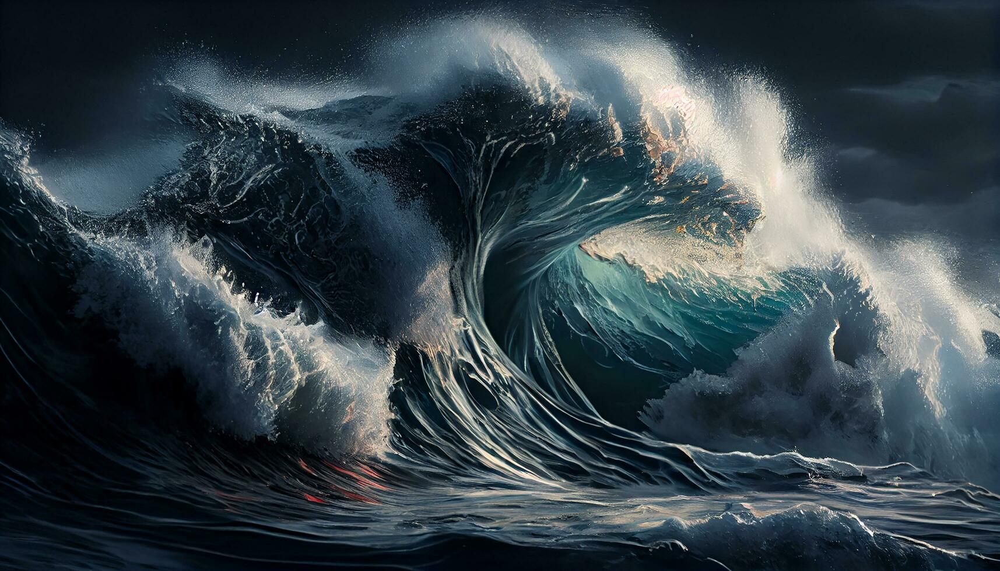

Copyright= https://www.freepik.com/free-photos-vectors/windows-10-beach-wallpaper/35
This is a sunset happpening on a beach , this view gives an illusion of the sun going into the water which looks very beautiful ar its color spreads on the water.
Crashing ocean waves with a vibrant color and emotion to it. source=https://www.freepik.com/free-photos-vectors/windows-10-beach-wallpaper/35

This beautiful green light just lights up the sky and gives us an emotion of peace .source = https://www.travelandleisure.com/trip-ideas/nature-travel/iceland-when-to-see-northern-lights